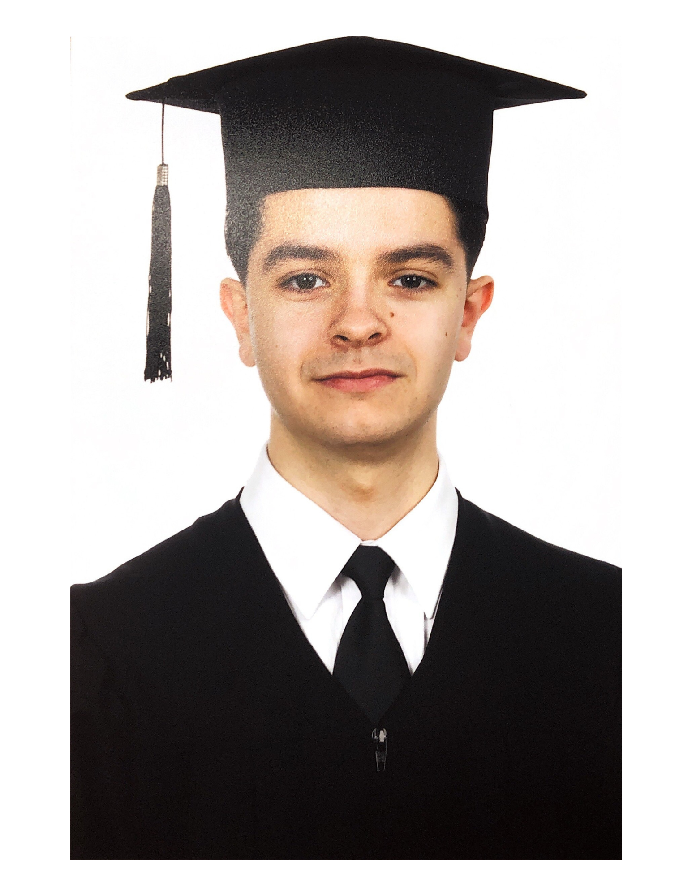
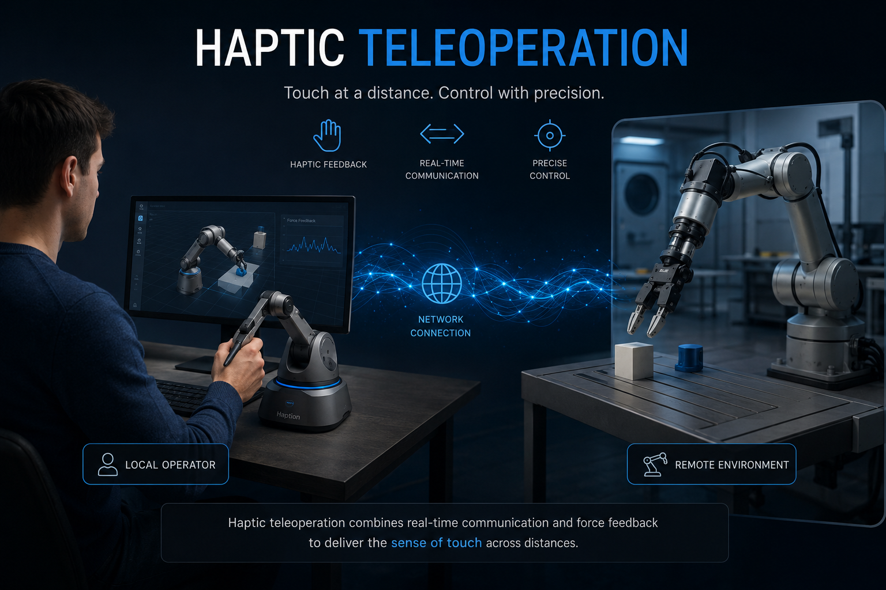
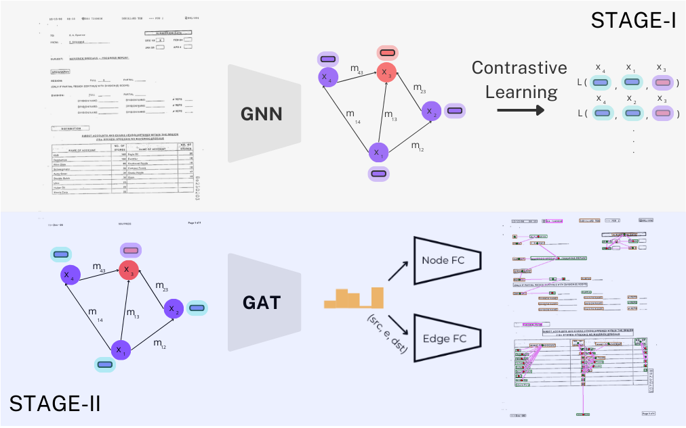
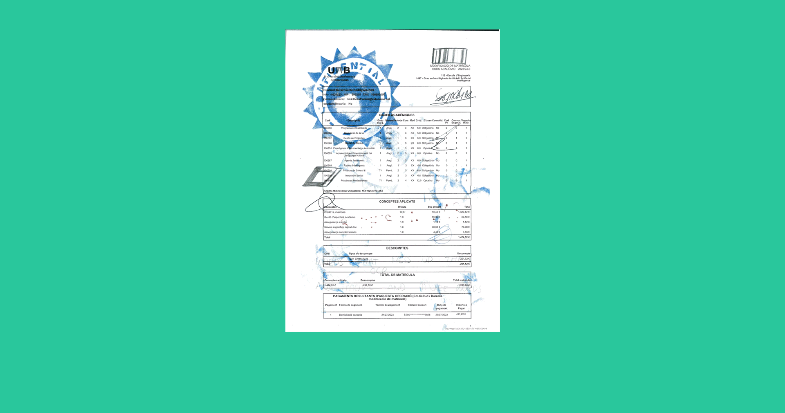

I am a first-year Master’s student in Data Science at EPFL (Switzerland). I graduated in the top 3% of Spain’s first Artificial Intelligence cohort at the Universitat Autònoma de Barcelona (UAB).
I am currently a Research Intern at the Visual Intelligence and Learning Lab (VILAB) at EPFL, advised by Professor Amir Zamir, where I develop vision tokenizers for 3D understanding with robotics applications.
Previously, I conducted research at the Computer Vision Center (CVC) and completed my BSc thesis at Technical University of Munich (TUM) under Daniel Cremers. I have publications at ECCV and ICDAR and am deeply motivated to advance physical AI and multimodal learning.

Experience
Developing vision tokenizers for 3D understanding with robotics applications, advised by Prof. Amir Zamir.
Conducted research in Generative AI and Graph Neural Networks for Document Understanding, contributing to ECCV and ICDAR publications.
Developed an AI pipeline for automated document digitization using OCR, Llama, and CV techniques.
Selected Research

We teleoperated a Franka Panda robot using a Falcon haptic device through ROS, exploring GMM/GMR and Task-Parameterized GMM for trajectory learning and generalization.
.png)
Expanding AnyCam to predict dense point clouds of dynamic scenes from uncalibrated video sequences.

A two-stage graph attention framework for structured document understanding without relying on OCR, capturing spatial relations via geometric edge features.

Decomposing documents into semantic layers to improve domain adaptation for restoration tasks.
Blog & Thoughts
View All Posts →This is a placeholder for your blog post description. Share a brief summary of your thoughts, research, or journey here.
Use this section to highlight recent blog updates or interesting topics you've written about lately.
Skills
Technical Skills
- Programming: Python, C++
- Libraries: PyTorch, timm, Diffusers, ROS
- Tools: Rerun-io, Linux, Slurm, Docker, Git
Languages
- English: C1 (Advanced)
- Spanish: Native
- Catalan: Native